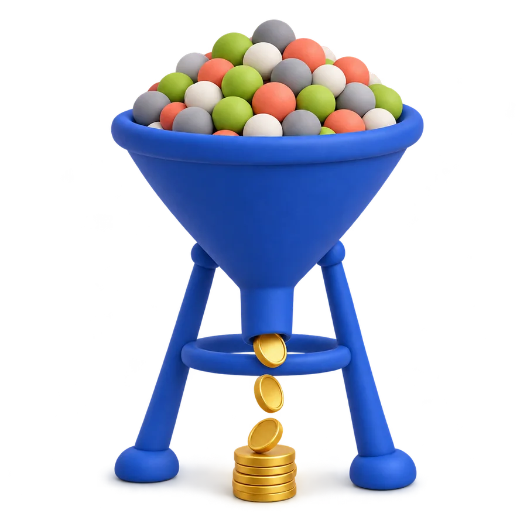

01 · 숫자로 보는 현실
앱은 60% 늘었는데, 다운로드는 2% 늘었어요
AI 덕에 만들기는 쉬워졌고, 팔기는 어려워졌어요. 병목은 개발이 아니라 돈 낼 사람이에요.
02 · 사례
살아남은 곳엔 돈 내는 쪽이 따로 있었어요
사용자 수나 기능이 아니라 예산을 가진 지불자가 있느냐가 갈랐어요.
살아남은 곳 돈 내는 쪽
무너진 곳 무너진 이유
03 · 거르는 법
좁은 타겟은 다섯 번 걸러요
'희귀할수록 좋다'는 틀렸어요. 좁을수록 경쟁도 줄지만 돈 낼 사람도 같이 줄어요. 내 아이디어를 넣어 직접 걸러 보세요.
04 · 후보
먼저 검증할 곳은 넷: 반려묘·난임·ADHD·영세 사업자
1순위는 기관 영업 없이 앱스토어·커뮤니티·검색으로 바로 닿는 곳, 2순위는 근거가 더 강해도 치료사·의원·센터를 설득해야 하는 곳이에요.
이 조합에 맞는 후보가 없어요. 다른 칸을 눌러 보세요.
05 · 분야별 한 장
분야마다 돈이 흐르는 길이 달라요
다섯 분야를 한 장씩. 탭을 누르면 그 분야의 핵심 숫자와 할 일이 나와요.
06 · 피할 곳
이 아홉 곳은 피해요
시장이 너무 작거나, 이미 붐비거나, 자본이 많이 들거나, 불법이에요.
07 · 규제
선은 기능보다 '말'과 '돈 받는 방식'에 그어져요
같은 기능도 어떻게 말하고, 누구에게 어떻게 돈을 받느냐로 갈려요. 그래서 규제 설계는 코드보다 랜딩페이지 문구에서 시작해요.
같은 일, 다른 결과
랜딩페이지에도 쓰지 않을 말
치료진단재활발병위험도
가짜 문 랜딩페이지도 공개 광고예요. 제품이 없어도 문제가 될 수 있어요.
출시 전 보안 관문 4개
08 · 지원사업
큰돈은 상반기에 마감, 지금은 연말까지 무료 컨설팅
2026년 창업지원 예산은 약 3.4조 원으로 역대 최대지만, 현금이 큰 사업은 상반기에 끝났어요.
09 · 다음 할 일
코드 전에 6주: 돈 낼 사람이 있는지부터
관심 표시가 아니라 지불 의사를 재요. 좁은 니치는 검색 도구가 수요를 0으로 보여 주기도 해서, 인터뷰와 커뮤니티가 주된 신호예요.
이렇게 검증한 사례
10 · 확인 필요
조사에서 아직 못 메운 빈칸 8개
1주 차 경쟁 조사와 법률 확인이 이 빈칸을 메우는 일이기도 해요.